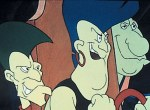

Forums galactiques > Taverne galactique : lieu de discussion informel > Machine a café [Rp!]
Pages : 1 2 ... 136 137 138 ... 443 444
| Hecate de Lunargent Réputation à la taverne : 293  06/07 ETU 13:43 | Score : 0 Détails "Bon, si votre repentir est sincère, vous êtes pardoné, je ne vous en tiendrais pas rigueur."
| ||
| Sacrés Pirates Réputation à la taverne : 0  06/07 ETU 14:11 | Score : 0 Détails Le plus petit et le plus teigneux des pirates s'avança.
"Eh p'tit Louis, espece de fausse vache qui rit tu sais ce qu'ils te disent les pirates de la préhistoire ?" | ||
| Hecate de Lunargent Réputation à la taverne : 293 06/07 ETU 14:23 | Score : 0 Détails "Je sais pas ce qu'ils disent, mais je sais quels bruits ils vont faire quand ils vont se prendre la réponse dans la tronche" ^^.
| ||
| Général_Louis Réputation à la taverne : 1323  06/07 ETU 18:57 | Score : 0 Détails "Tu me traites de quoi là le gnome?"
BOANG BAF PIF BOUM CRAC "Et estime toi heureux que je ne t'ai donner qu'une petite correction, quesque ça aurait été autrement." Les autres s'avncèrene,t Louis sortit son blaster et tira dans les genoux de tout ces pirates. "Astalavista les p'tits hommes préhistorique, j'ia d'autres chat à fouetter. Au fait, appellez une ambulance, ça fait pas propre de laisser des déchets." | ||
| Lord Yassine Réputation à la taverne : 371  06/07 ETU 22:49 | Score : 0 Détails Lord Yassine entra pour la première fois en ce lieu inconnue jusque la pour lui. Il prit un café, et regagna une table dans un coin pénard pour le boire.
| ||
| Atheos Réputation à la taverne : 133  07/07 ETU 23:08 | Score : 0 Détails Le jeune homme perssa le silence de ses pas, il perssa l'obscurité de la lumière. Cette énergie le guidant vers son but.
Il se servit un long café puis alla réfléchir assis à une table. | ||
| Hecate de Lunargent Réputation à la taverne : 293 07/07 ETU 23:44 | Score : 0 Détails La commandante entra d'un pas serein dans ce qui semblait devenir son deuxième foyer. Elle alla se chercher une boisson puis fit un salut de la main à Atheos avant d'aller s'asseoir à une table.
| ||
| Jad Kinon Réputation à la taverne : 86  08/07 ETU 00:38  | Score : 0 Détails
Un homme rentra dans la salle. Il était habiller en noir,mais portait une cape de couleur blanche,il s'avança vers une des tables. Fixa longuement la chaise et décida finalement de si poser. Encore une sale journée. il décida de prendre un thé pour retrouver un semblant de sérénité. | ||
| -[Aerÿnn]- Réputation à la taverne : 2661  08/07 ETU 17:03 | Score : 0 Détails Aerÿnn entra dans la salle. Cela faisait longtemps... Tant de souvenirs ici.
'Un thé ce sera parfait' se disait-elle en se dirigeant vers la bonne vieille machine qui a déjà été remplacée de nombreuses fois... Elle insère un leem, choisit du thé au jasmin. Puis un second et prît un biscuit pour l'accompagnement. Et enfin s'installa au fond comme toujours... | ||
| khalim Réputation à la taverne : 488  08/07 ETU 17:27 | Score : 0 Détails Khalim entra dans la pièce après l'avoir cherchée pendant une bonne demi-heure. Depuis le temps qu'il n'y était pas entré, sa mémoire lui avait joué des tours. Il se choisit un café et une gauffre belge (il avait découvert cette pâtisserie préhistorique dans un petit café-bistro d'une planète ou il était allé en vacances) puis chercha une place libre ou s'asseoir. Voyant Aerynn seule au fond de la pièce, il la rejoignit.
-Bonjour Aerynn, vous allez bien? | ||
| -[Aerÿnn]- Réputation à la taverne : 2661 08/07 ETU 17:53 | Score : 0 Détails Contente de voir un visge familier, Aerÿnn sourit :
"Bonjour cher Khalim ! Cela faisait longtemps ! Je vais bien et vous-même ?" | ||
| khalim Réputation à la taverne : 488 08/07 ETU 18:41 | Score : 0 Détails Khalim prit une gorgée de café et répondit
-Je vais très bien. J'avais besoin d'évacuer la tension, alors je suis venu ici... | ||
| -[Aerÿnn]- Réputation à la taverne : 2661 08/07 ETU 18:46 | Score : 0 Détails "Oui cet endroit est apaisant, enfin la plupart du temps...
Bon, je vous laisse déjà. J'éspère vous revoir prochainement." Sur ces mots, Aerÿnn sortit de la salle. | ||
| Lord Yassine Réputation à la taverne : 371 09/07 ETU 00:22 | Score : 0 Détails Lord yassine arriva, la salle était déserte, il pris un café et rejoignit sa table habituelle.
| ||
| Lord Yassine Réputation à la taverne : 371 09/07 ETU 00:44 | Score : 0 Détails à peine Lord yassine but quelques gorgés qu'il reçut un message urgent sur sont X-com,puis il dit:
-olala...on ne peut même pas ce reposer 5min!!! Pff...C’était trop beau pour être vrais. il ramassa sa massue et sorti . | ||
| Lord Yassine Réputation à la taverne : 371 10/07 ETU 00:38 | Score : 0 Détails La salle était déserte quand Lord Yassine entra. Il prix un café, et rejoignit sa table habituelle.
| ||
| Valdisa Réputation à la taverne : 45  10/07 ETU 17:57 | Score : 0 Détails Quel journée ...
Valdisa avait passer tout la journée a des négociations sans fin ... Enfin, elle avait cinq minutes a elle . c'était la première fois qu'elle expérimentait la machine a café . Dans son royaume il n'y avais pas de telle chose . "Deux leem 50 pour une boisson, La capital galactique est de plus en plus cher" Elle pris un Thé est s'assis a une table qui faisait face a la fenêtre panoramique ... | ||
| Zeuhl Wortz K Réputation à la taverne : 188  10/07 ETU 18:10 | Score : 0 Détails Aprés avoir conter leurs passé à l'Assemblée avec les émotions les plus fortes et les plus sincères, les Cinq Combattants de la Zeuhl Wortz Kosmic épuisés prirent qq minutes de repos dans le seul endroit calme du batiment de l'Assemblé....La Salle "Café"...Ils chercherent tout d'abord leur Mëkanïk'Kosmïc'Kafei, mais on ne pouvait apparement qu'en trouver sur Kobaïa...
Enfin déçu ces Cinq Combattants pris le premier breuvage que la Mëkanïk'machine veuilla bien leur donné, et ils s'assirent en cercle en plein milieu de la salle pour une séance de recherche Spirituelle.... A cause de la fatigue ces 5 personnages n'avaient pas anticipé la gène que pourrait occasionner cette petite sceance aupres des autres commandants.... .... | ||
| Cdt saint-shaka Réputation à la taverne : 24  10/07 ETU 18:18 | Score : 0 Détails Le commandant saint-shaka apparut à l'embrasure de la porte menant à la machine à café...
Il semblait exténué,déprimé même...De fait,sa salle d'enchère,"au bonheur de boudha" ne se portait pas à merveille.Peut-être pensait-il qu'un café allait lui remonter le moral. Il s'approcha alors de l'engin et commanda un thé vert,venant du confin du tibet,"le boudha extra-light"...Aussi appelé,"la capitulation de la fatigue". Puis,en voulant repartir s'asseoir pour consommer sa boisson,il trébucha sur les combattants de la Zeuhl Wortz Kosmic...Voyant ses amis ainsi,il risqua une question:"Alors chers amis,que faites vous ainsi par terre?Je puis vous apprendre à léviter si vous le désirer,cela vous permettrait de communier loin de tout..." | ||
| Zeuhl Wortz K Réputation à la taverne : 188 10/07 ETU 18:29 | Score : 0 Détails Le Cdt Saint-Shaka ne reçu aucune réponse, et il s'aperçu qq second après avoir posé sa question que les 5 Comabattants étaient en trans devant lui et les cdts prenant leur café ....On pouvait entendre :
" U malawalawala wo siweli welohndai dowi weli wehnsai Eweleh do weliwe si lehnsai, eweleh we do weliwe si lehnsai Tu..... Tu.... Tu.... Tu.... U malawalawala wo siweli welohndai dowi weli wehnsai Eweleh do weliwe si lehnsai, eweleh we do weliwe si lehnsai Tu..... Tu.... Tu.... Tu.... Tu.......... Tu........ Tu............. Tu o ewileh wi lehnsooooooooooo...." |
Pages : 1 2 ... 136 137 138 ... 443 444
Forums galactiques > Taverne galactique : lieu de discussion informel > Machine a café [Rp!]